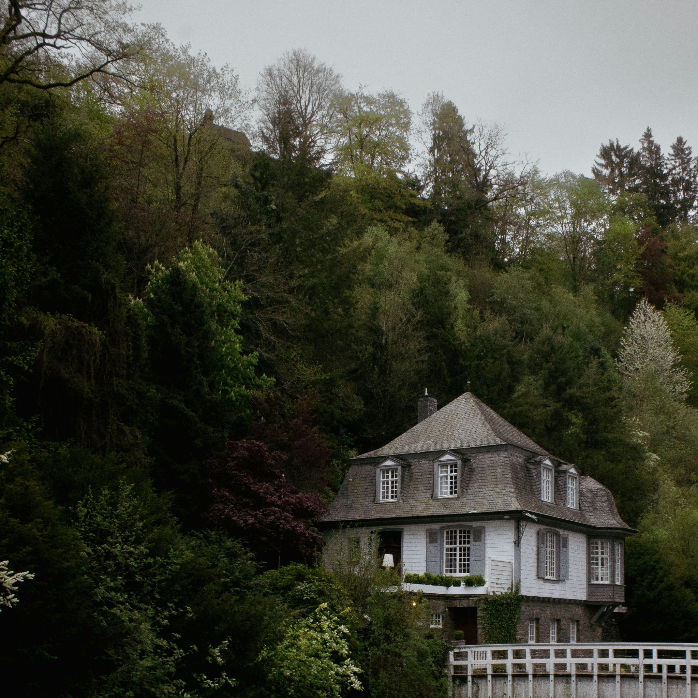
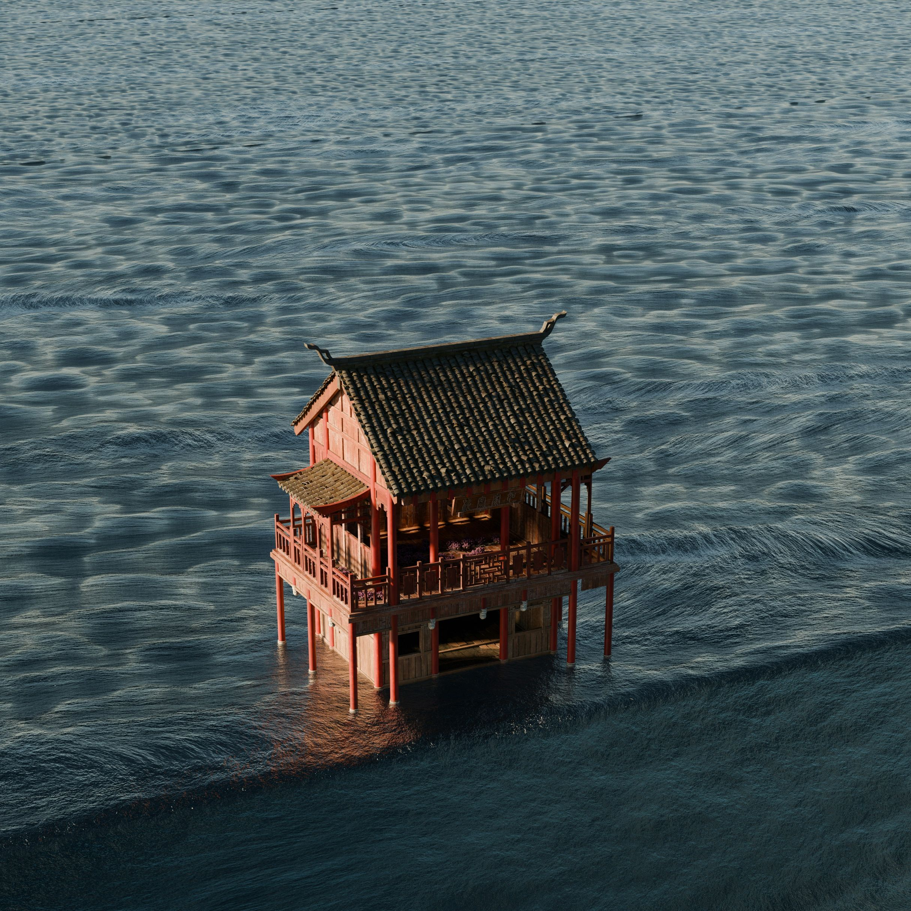
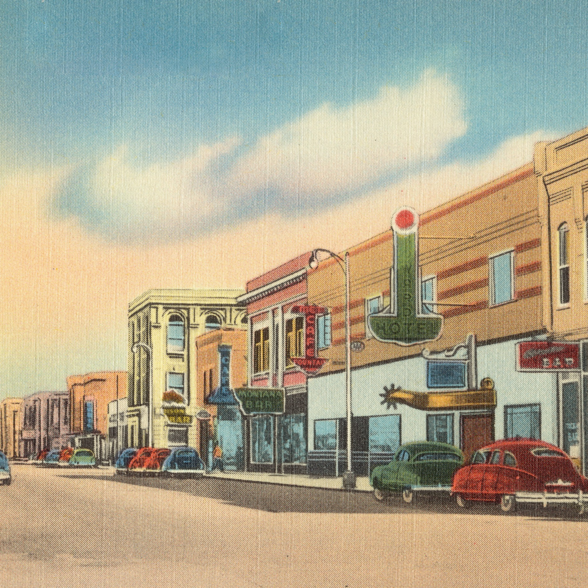
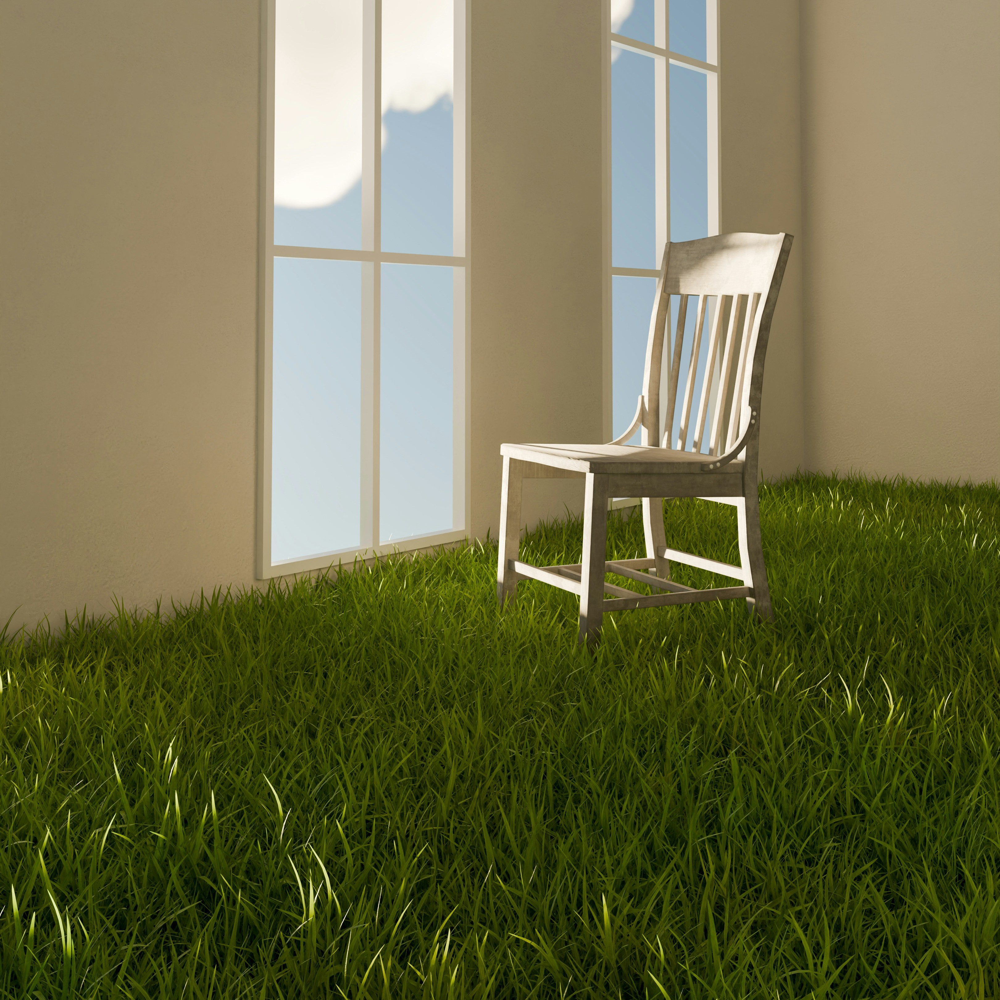

Name: 정 상 민 (Jeong Sang Min)
Age: 23
Hobby: 음악 감상, 독서, 영화 관람
Study: Computer Engineering & System Design
Mind: 꾸준함 속에서 나만의 궤적을 만드는 사람
"Born in Seoul in 20xx, I grew up as an active and cheerful child just like any other. Moving to Gyeonggi-do in 2015 brought a new neighborhood and new friends, teaching me a fresh perspective on life. After spending my middle school years rather carefree, entering high school sparked a turning point where I found my dream of becoming a programmer. Growing steadily through adolescence, I eventually stepped into adulthood in 202x and enrolled in the Department of Computer Engineering at Kangwon National University, a provincial national university close to my home. After a hectic freshman year, I fulfilled my military service. It has already been nine months since my discharge, and I am currently navigating my sophomore year, busy with assignments."
Language: C Programming Language, Java Programming Language, HTML/CSS/JavaScript
"I first started learning C in my freshman year of high school. To be honest, it all began as a bit offun. Back then, the elective courses for our language domain included Japanese, Chinese, Spanish, and C language. I simply chose C for the fun of it, but that choice completely transformed my life. C language became a subject that gave me immense confidence. While I wasn't exceptionally better than others in math, English, or Korean, C language was different. That’s how I fell in its charm, and I continued to choose C language for my language domain throughout all three years of high school. Java was something I encountered for the first time upon entering university. Since I had already mastered C, Java felt like just a slightly different version of it. As a result, I was able to master Java without any major difficulties. Lastly, HTML/CSS is a set of languages I taught myself to prepare for a competition Since it was the very first language I learned completely on my own, it holds a very special value for me."
1. Data & Structure: Ever since I first encountered C in high school,I have been fascinated by organizing data efficiently.I find great joy and excitement in structuring complex problems into clean, logical code to manage data.
2. AI & Local Life: After mastering Java in college, I opened my eyes to technological scalability. Rather than just pursuing grand tech, I want to create human-centered AI services that solve everyday inconveniences in our local community.
3. Cyber Security: Much like self-studying HTML/CSS for a competition, security sparks my passion for endless exploration. I want to build a strong shield that safely protects the valuable data and logical structures I carefully create from external threats.
My playlist picks for today
About me
"This page is not just to fill the remaining space on my website. I grew up in a
relatively poor household during my childhood. However, thanks to my parents, I was completely
unaware of our situation back then. It wasn't until I reached the 5th grade of elementary school,
when I moved to a new neighborhood and spent more time alone as I grew apart from my old friends,
that I began to understand. Up to that point, I had lived quite comfortably. However, as I entered
middle school, our financial situation gradually worsened, and I found myself becoming someone
obsessed with money.
When I started high school, I chose C language as an elective course for fun. Compared to other
subjects, it was relatively easy for me to follow, and I earned good grades. I was spending my days
without any particular dream or meaning until my second year, when my computer teacher told us, 'The
demand for programmers will grow significantly, and it is a profession with a high starting salary.'
This sparked a sense of excitement in me. From that moment on, I developed a dream and a desire to
go to university. I studied hard, aiming for a national university in Seoul, but my poor grades from
freshman year held me back. Consequently, I changed my target and came to Kangwon National
University.
I have no regrets about this choice. It is a tuition-affordable national university close to my
home, and some of my close friends came here with me. The campus was larger than I expected, and my
first campus life was truly thrilling. But that time flew by, and before I knew it, it was time to
join the military. I enlisted in March, after enjoying my time to the fullest. Honestly, military
life was manageable. Unlike what is portrayed in the media, things had changed a lot. Generally,
physical abuse, verbal abuse, and arbitrary commands from seniors to juniors were prohibited.
After 18 months of what people call 'valuable time' passed, I was finally discharged. At first, it
felt surreal. However, the joy was short-lived as I became desperate to find a part-time job to save
money for living on my own. Time passed, and I finally started living independently, becoming a true
adult. It was a different kind of thrill compared to the day I was discharged. After finishing what
many consider a 'tough' military service, I thought school life would be easy—but I was wrong. The
packed class schedules, daily assignments for every subject, and the stressful exam periods... I
never thought I would actually miss the military.
Nevertheless, I know I will overcome these challenges, one step at a time. I believe that is my
greatest strength: being able to finish everything, one by one, no matter how much is on my plate. I
know there will be many more trials ahead, but I will not be discouraged. I will keep moving
forward."
노래




Reflection on the Assignment
It started as a light task, but it gradually became more challenging and profound as I dove deeper into the process.
1. Introduction
I wasn't entirely sure about the scope at first, and
I constantly felt
that
something was missing.
This led to the design of the first page, where I added various elements and features.
Despite the professor's detailed explanations in class, I struggled to recall certain specifics, such as the target mobile aspect ratio for responsive web design.
This led me to implement "max-width: 1320" as a solution to prevent elements from overlapping when the box size decreases.
I suspect the code became a bit messy because of this, but it was a necessary fix.
As for the self-introduction, I decided to write it in English—partly to be honest about my journey, and perhaps, a little bit to ensure it stays concise.
I wanted to avoid relying on AI as much as possible, using it only to fill the space with my own genuine thoughts.
Yes, that is a real photo of me.
2. MUSIC
The inspiration for this page was quite simple.
Even though the professor gave us creative freedom, I was initially stuck, so I decided to model it after Apple Music, an app I use daily.
I felt its minimalist aesthetic aligned perfectly with my website’s vibe.
I am well aware that a music playlist on a personal introduction site might seem random.
I am truly regretful that I couldn't implement advanced features like functional play buttons or the active playback bar due to time constraints and my current technical limitations.
I hope you enjoy the effort I put into it!
3. Summary
I’ll let you in on a secret: this page was originally intended to be a fashion shopping mall layout!
After dedicating so much time and effort to the music page, this was a much-needed "gift" to myself for my next assignment.
Although I changed the direction at the last minute, I believe it turned out quite well.
It was a good exercise in designing a content-rich page with basic text.
I tried to build everything from scratch, occasionally using AI only to look up specific syntax.
AI was incredibly helpful for finding the perfect color combinations.
While I wanted to fill this page with impressive achievements and professional skills, I realize I still have a long way to go.
Moving forward, I am determined to fill this space with solid experience, unique strengths, and a robust portfolio.